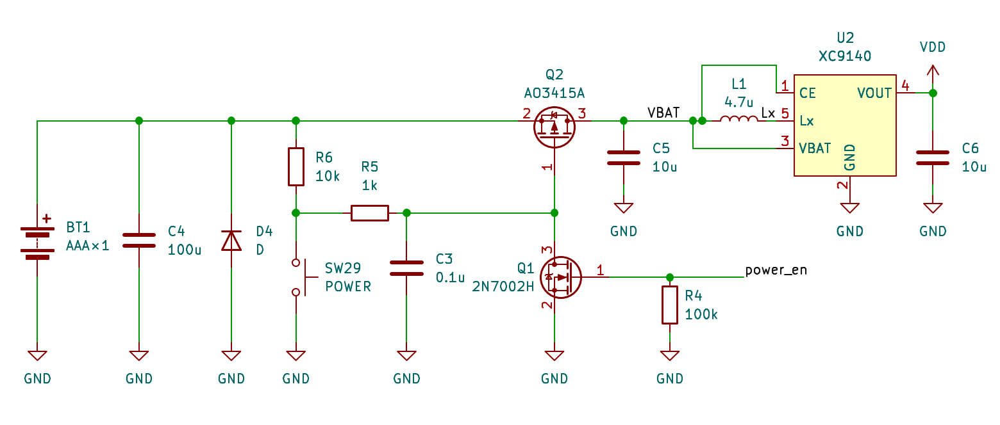

逆ポーランド記法 (RPN) で入力する自作の関数電卓。 二進浮動小数点数による誤差を避けるため18桁の十進浮動小数点演算ライブラリを自作して演算コアとし、 PIC32CM Lx (Arm Cortex-M23) と動的クロック制御により単4電池1本・待機1mW / 計算時9mWで動作する。
演算子を被演算子の後に置く記法。中置記法の電卓が [1][+][2][=] と入力するのに対し、 RPN電卓では [1][Enter][2][+] と入力する。 実装はスタックマシンそのもので、数値入力はプッシュ、演算子は「2値ポップ → 演算 → 結果をプッシュ」に対応する。 構文解析器も優先順位表も不要で、限られた資源上でも実装できる。
括弧と「=」が不要になるため、式が複雑になるほど打鍵数が減る ((1+2)×(3−4) は中置11打鍵に対しRPNは9打鍵)。 さらに「1に2を足して、3から4を引いて、その二つを掛ける」という日本語の語順のまま入力でき、 式全体を先に組み立てる必要がない点が実用上大きい。スタック全体のロールや任意段のスワップも備える。
電子回路でよく使う演算を専用キーとして持たせている。 並列抵抗演算 (x×y)÷(x+y) や、RC・LCフィルタのカットオフ周波数を直接求める関数を実装した。
市販電卓と同じ「キー押下で電源ON、時間経過や特定キーでOFF」を実現するため、PMOSを電源スイッチとし、 そのゲート電圧をモーメンタリスイッチとNMOSのORで制御する。 キー押下でDCDCが起動 → マイコンが起動直後に power_en をHighにして自己保持し、OFF時はLowに戻して回路全体の電源を落とす。 単4アルカリ1本では0.9V程度でPMOSをONさせる必要があるため、Vth = −0.3〜−0.9V の AO3415A を採用した。
float / double は数値を二進で表現するため、十進で有限桁の値が二進では循環小数となる。 十進の0.1は二進で 0.000110011001100… と無限に続き、有限桁では正確に表現できない。 結果として入力値と内部値に差が生じ、連続演算では誤差が累積する (=(100.01-100)*100-1 が0にならないExcelの例が有名)。 電卓としては「表示した値がそのまま内部値である」ことが要求されるため、この差は許容できない。
解決策として、内部演算も十進で行う。二進化十進数 (BCD) は各桁を十進数として直接保持するため、 0.1のような値を誤差なく表現できる (十進で循環する値については同じ問題が残る)。 浮動小数点数を次の構造体で表現した (下は3桁の例、実際は18桁)。
四則演算は筆算を基本に実装する。四則演算が揃えば、 テイラー展開やニュートン法によって三角関数・対数・平方根などの数学関数も構成できる。 この18桁ライブラリを電卓のコアとした。
後継機として、演算コアをIntel® Decimal Floating-Point Math Library (decimal128 / 34桁) に、 MCUをRP2350に置き換えたRPN35を頒布している (別紙参照)。
